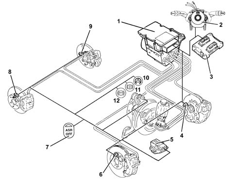

Introduction VEHICLE STABILITY CONTROL SYSTEM
- Path
- Descriptions > 33 BRAKES > 3350 TRACTION CONTROL > 3350E VEHICLE STABILITY CONTROL SYSTEM > Introduction VEHICLE STABILITY CONTROL SYSTEM
- Kind
- system description
- Applies to
- all engines; all production periods
- Interactive page
- https://sloeber94.github.io/elrnDB-lThss/en/#/152555
Applies to: all engines; all production periods

- 1 - ABS/ESP control unit
- 2 - Steering angle sensor
- 3 - Engine management control unit
- 4 - Left front wheel sensor
- 5 - Slewing/lateral acceleration sensor
- 6 - Right front wheel sensor
- 7 - ASR off button
- 8 - Right rear wheel sensor
- 9 - Left rear wheel sensor
- 10 - ESP warning light
- 11 - EBD warning light
- 12 - ABS warning light